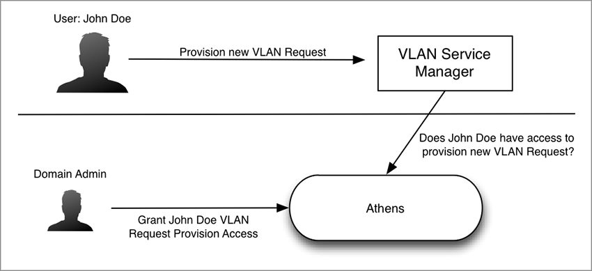
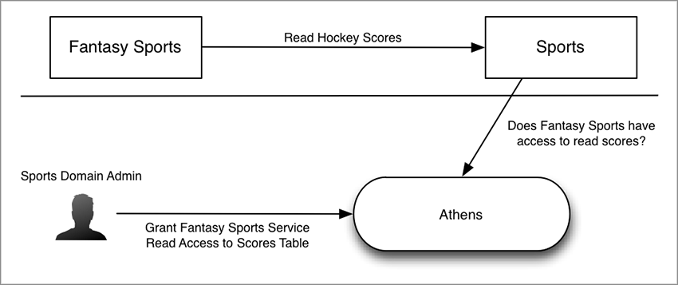
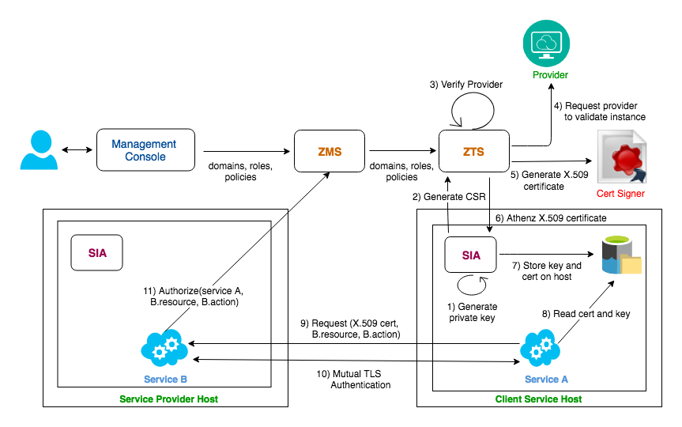
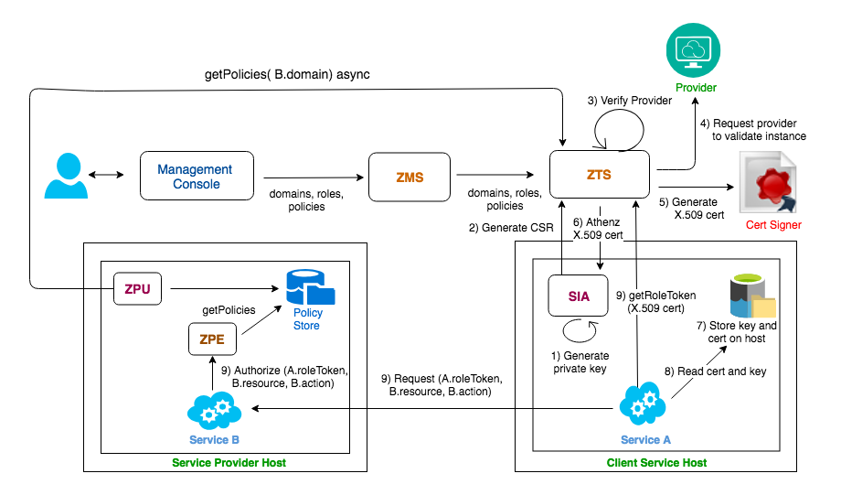

Architecture - Authorization Flow
Use Cases
Manage Access Control and Permissions for Resources
Athenz allows you to manage access control and permissions to resources through the centralized authorization management service (ZMS) and domain configuration that defines resources, roles, and actions.
The diagram below shows a simplification of the use case without domain configuration.

Your domain configuration file gives you fine control over who can access resources and what actions can be taken. ZMS manages your domain files and provides a RESTful API that allows you to create and modify domain configurations.
This gives you the ability to control user access, tenancy, and secure editorial content and infrastructure assets.
Real-Time Service Security
Athenz provides endpoint protection for services, so a service such as Sports in the diagram below doesn't need to set network ACLs for other services wanting to access data. Instead, services are authorized by Athenz to access resources from another service based on the permissions defined by the domain administrator.

Authorization Flow
Centralized Access Control (Control-Plane)
A traditional centralized mechanism works as expected for services that are not dealing with the decentralized authorization: the server with resources can simply ask the ZMS directly about access, passing the service identity and resource/action information to get a simple boolean answer. This does not scale well enough for data-plane access, since a central service must be consulted, but requires no local installation of the ZPE and related storage and synchronization logic. It is suitable for provisioning and configuration use cases where the number of requests processed by the server are small and the latency for authorization checks is not important.
Principals
In Athenz, actors that can assume a role are called principals. Principals can be users or services, and users can be those looking for resources from a service or use the ZMS management console. In the following sections, we'll look at centralized authorization for the service principal we just discussed.
Authenticated Service
To contact Athenz Services (ZMS/ZTS) or other Athenz Enabled services, the client service must first obtain an Athenz CA issued X.509 certificate. The services establish standard mutual TLS communication with other Athenz Enabled Services. Once the mutual TLS authentication is established, the provider service contacts Athenz Management Service directly to determine if a specific authenticated service has been authorized to carry out the given action on the requested resource. The application receives a simple boolean answer whether or not the request should be processed or rejected.

The domain administrator can create a separate service that only has access for the given provider, thus provider having access to the service's identity will not have access to any other resource.
Refer Service Authentication for full details on X.509 certificate based authentication.
Decentralized Access Control (Data-Plane)
A more interesting scenario introduces the local policy engine (ZPE), and a few supporting changes. Rather than directly asking for an access check with a principal identity, the identity is instead used to get a ZToken, and that is presented to the target service until it expires. This mechanism allows a service to make a completely local access check against ZPE, given a ZToken and locally cached policies.
Specifically, as shown in the diagram below, the client service/user presents an X.509 certificate from SIA Provider to get an authorization token (ZToken) from ZTS, and then presents the ZToken to a target service to access its resources.

That service can make use of a local ZPE to validate the role assertions in the ZToken, and then correlate them to the asynchronously updated Policies for the domain involved. The ZPE can make the decision locally, without going off box. It has no knowledge about specific users, only roles, and because roles and policies are always in the domain, the amount of data to distribute to the machine is small.
Policy Engine
The Policy Engine (ZPE) only needs to deal with policies and their roles, actions, and resources. Concepts like groups would only affect how a principal can assume a role, so is involved in getting the ZToken, but not using it in the ZPE. When evaluating policies, the relevant assertions of all relevant policies must be considered. Assertions are treated like a big "OR" with the default effect of "Allow", whereas any single "Deny" will override any other assertions. The policies can have prefix-matching wildcards, so that glob-style matching needs to be part of the "is this assertion relevant" logic.
The policies must be fetched from ZTS for the ZPE to operate. Additionally, the policies must be refreshed as they change. It is expected that policies will change at a much lower frequency than user/role assignments, so a daily pull may be fine for this.
The policies are not sensitive (secret) information, but their integrity is important, so the policies fetched (per domain) is signed by both ZMS and ZTS servers. This requires a predictable serialization of the policy data structures. That will be fields in the order the schema specifies, serialized to JSON, then signed.
The actual fetch is performed by a locally running distribution agent, which could be implemented as a cron job or other async fetching mechanism. The resulting policies could be atomically changed per domain. Because the ZPE only will have policies for the domains of services running on the same host/container, there will be relatively few of them.
The API for getting signed policies actually gets many policies in a single list, which is signed as a whole according to the ordering rules above.
Reserved Domains
The following domains are reserved and are automatically provisioned during server startup:
- user - The reserved domain for authenticated users.
- sys - The reserved domain for managing system activities
- sys.auth - The Athenz domain itself, which is where policies governing the top level domains reside.
Management Scenarios
Simple Centralized Scenario
In the simplest scenario, one would perform the following actions. Note that even in this case, the management calls themselves are protected by Athenz, so for example one property admin cannot modify another property's domain.
- Set up domains as a super admin
- Assign domain administrators for the domain
- Create services in the domain
- Create roles, as the domain admin, to model the expected activity. Assign users and services as needed.
- Create policies, with references to resources that are the target of various actions
- The services would implement the access check calls to enforce access based on the ZMS "access check" API. This may happen in a container or filter.
Multi-tenancy Scenario
Setting up a tenant in a provider requires the concepts of a cross-domain "trust relation". Such a trust relation can be implemented as follows:
- A Policy is set up in the group-defining domain (Domain-A) that asserts that one of its local Roles can “assume” a role in the target Domain. The role used in this policy is arbitrary, under the control of Domain-A, who can add/remove users from it as it needs.
- A Role is created in the target Domain-B, but instead of specifying users, the trusted domain is set to Domain-A.
- Domain-B can then set up whatever policies it needs to protect relevant resources, by referring to its special role as the principal
- At access check time, when the policy is encountered that indicates a role that is trusted, that role (in another Domain) must then be consulted to determine who can assume the role.
Service Authentication
Refer Service Authentication for full details on X.509 cerificate based authentication.